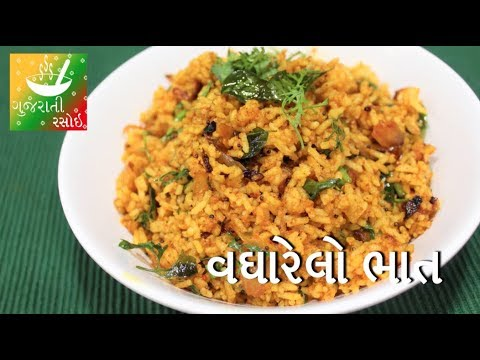

Vagharela Bhaat
Description
Vagharela Bhaat is probably top of the list. Essentially it means fried rice and is made with leftover plain Basmati rice.
Ingredients
- Cooked rice : 2 cups
- Chopped Onions - 2 medium Sized Chopped
- Red Chili Powder - 2 tsp - can adjust as per taste
- Coriander powder - 1 tbsp
- Turmeric Powder - 2 tsp
- Salt - As per taste
- Oil - 1 tbsp
- Garam Masala - 1 tsp
- Mustard Seeds / Rai - 1 tsp
- Hing - 1 tsp
Preparation
- In a cooking pan heat oil, as oil starts heating add Mustard Seeds / Rai
- As Mustard Seeds starts spluttering add hing
- Add Onions and cook till onions turns translucent
- Add Red chili powder, coriander powder, turmeric, garam masala, salt and saute for a minute
- Add Cooked Rice and mix well till all the spices coat properly to rice
- Serve hot with chilled Masala Dahi
